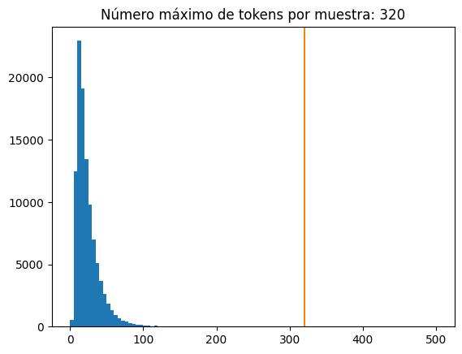
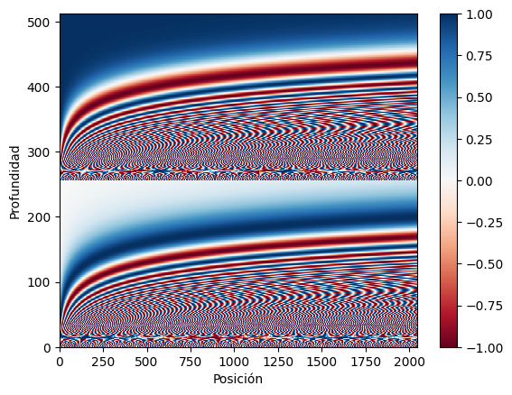
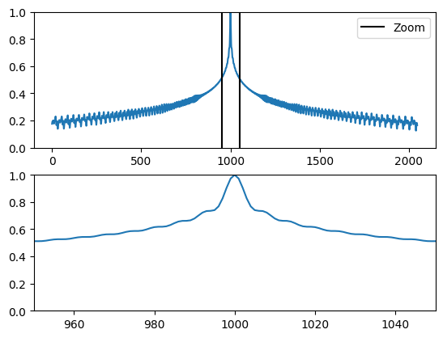

-> Ejemplos en portugués:
e quando melhoramos a procura , tiramos a única vantagem da impressão , que é a serendipidade .
mas e se estes fatores fossem ativos ?
mas eles não tinham a curiosidade de me testar .
-> Traducción al inglés:
and when you improve searchability , you actually take away the one advantage of print , which is serendipity .
but what if it were active ?
but they did n't test for curiosity .Explicando la Mejora de los Transformers sobre las RNNs
Última actualización 07/05/2025

Los Transformers: Una Nueva Era en el Procesamiento de Secuencias
Las Redes Neuronales Recurrentes (RNNs) han sido una herramienta fundamental para el procesamiento de datos secuenciales, como el lenguaje natural. Sin embargo, los Transformers, propuestos en el artículo “Attention is all you need”, han revolucionado este campo, ofreciendo ventajas significativas sobre las RNNs. Los Transformers son redes neuronales profundas que reemplazan las CNNs y las RNNs. Estos introducen la auto-atención (self-attention) permite a los Transformers transmitir información fácilmente a través de las secuencias de entrada.
¿Por qué los Transformers son importantes?
- Paralelización: A diferencia de las RNNs, los Transformers pueden procesar todos los elementos de una secuencia en paralelo, lo que permite un entrenamiento mucho más rápido en hardware moderno como GPUs y TPUs.
- Captura de dependencias temporales de larga duración: Los Transformers utilizan mecanismos de atención que permiten a cada posición de la secuencia prestar atención a todas las demás posiciones, facilitando el aprendizaje de relaciones entre elementos distantes. Las RNNs tienen dificultades para esto debido a la necesidad de procesar la secuencia paso a paso.
- Flexibilidad: Los Transformers no hacen suposiciones sobre las relaciones temporales o espaciales en los datos, lo que los hace aplicables a una variedad de tareas más allá del lenguaje, como el procesamiento de imágenes o el análisis de juegos.
En este notebook, exploraremos en profundidad los componentes clave de los Transformers y compararemos su funcionamiento con el de las RNNs, destacando las razones de su superioridad.
Comparativa RNNs vs Transformers
| RNN+Modelo de Atención | Transformer de 1 capa |
|---|---|

|
|
Codificación y decodificación del Transformer en traducción

Funcionamiento de los Transformers en la traducción de texto. Fuente: Blog Google AI.
Esquema de trabajo
Con lo anterior en mente, y una vez visto un poco las diferencias entre RNNs y Transformers, vamos a abordar los siguientes contenidos de manera detallada:
- Prepararás los datos.
- Implementarás los componentes necesarios:
- Embeddings posicionales.
- Capas de atención.
- El codificador y el decodificador.
- Construirás y entrenarás el Transformer.
- Generarás traducciones.
- Exportarás el modelo.
Carga y Preprocesamiento de Datos
Cargaremos un conjunto de datos de traducción Portugués-Inglés y utilizaremos un tokenizador para preparar el texto para el modelo. Este conjunto de datos contiene aproximadamente 52.000 ejemplos de entrenamiento, 1.200 de validación y 1.800 de prueba.
Tokenizadores
En nuestro ejemplo vamos a usar los tokenizadores construidos en el tutorial subword tokenizer. Ese tutorial optimiza dos objetos text.BertTokenizer (uno para inglés, otro para portugués) para este conjunto de datos y los exporta en formato saved_model de TensorFlow.
'./ted_hrlr_translate_pt_en_converter_extracted'['detokenize',
'get_reserved_tokens',
'get_vocab_path',
'get_vocab_size',
'lookup',
'tokenize',
'tokenizer',
'vocab'](TensorShape([7010]), TensorShape([7765]))El método tokenize convierte un grupo de oraciones en un grupo de identificadores de tokens de una misma longitud (padding). Este método separa los signos de puntuación, las minúsculas y normaliza el texto de entrada antes de la tokenización. Esta normalización no es visible aquí porque los datos de entrada ya están normalizados.
-> Esto es un grupo de cadenas:
and when you improve searchability , you actually take away the one advantage of print , which is serendipity .
but what if it were active ?
but they did n't test for curiosity .-> Este es el grupo de cedena de ID de tokens (con padding)
[2, 72, 117, 79, 1259, 1491, 2362, 13, 79, 150, 184, 311, 71, 103, 2308, 74, 2679, 13, 148, 80, 55, 4840, 1434, 2423, 540, 15, 3]
[2, 87, 90, 107, 76, 129, 1852, 30, 3]
[2, 87, 83, 149, 50, 9, 56, 664, 85, 2512, 15, 3]El método detokenize convierte los ID de token de nuevo en texto legible normal:
-> Correspondiente texto:
and when you improve searchability , you actually take away the one advantage of print , which is serendipity .
but what if it were active ?
but they did n ' t test for curiosity .El método lookup convierte de token-IDs a token-texto:
-> Este es el texto dividido en tokens:<tf.RaggedTensor [[b'[START]', b'and', b'when', b'you', b'improve', b'search', b'##ability',
b',', b'you', b'actually', b'take', b'away', b'the', b'one', b'advantage',
b'of', b'print', b',', b'which', b'is', b's', b'##ere', b'##nd', b'##ip',
b'##ity', b'.', b'[END]'] ,
[b'[START]', b'but', b'what', b'if', b'it', b'were', b'active', b'?',
b'[END]'] ,
[b'[START]', b'but', b'they', b'did', b'n', b"'", b't', b'test', b'for',
b'curiosity', b'.', b'[END]'] ]>La salida demuestra el aspecto de "subword" de la tokenización de subpalabras.
Por ejemplo, la palabra 'searchability' se descompone en 'search' y '##ability', y la palabra 'serendipity' en 's', '##ere', '##nd', '##ip' e '##ity'.
Ten en cuenta que el texto tokenizado incluye los tokens '[START]' y '[END]'.
La distribución de tokens por ejemplo en el conjunto de datos es la siguiente:
...................................................
Configuración del pipeline de datos usando tf.data
La siguiente función toma batches de texto como entrada y los convierte a un formato adecuado para el entrenamiento.
- Los tokeniza en lotes de diferentes dimensiones (ragged).
- Recorta cada uno para que no tenga más de
MAX_TOKENS. - Divide los tokens objetivo (inglés) en entradas y etiquetas. Estos se desplazan un paso de modo que en cada ubicación de entrada, la
etiquetaes el ID del siguiente token. - Convierte los
RaggedTensorenTensordensos con padding. - Devuelve un par
(entradas, etiquetas).
La siguiente función convierte un conjunto de datos de ejemplos de texto en datos de lotes para el entrenamiento.
- Tokeniza el texto y filtra las secuencias que son demasiado largas.
- El método
cacheasegura que ese trabajo solo se ejecute una vez. - Luego,
shuffley preparar el batch. - Finalmente,
prefetchejecuta el conjunto de datos en paralelo con el modelo para asegurar que los datos estén disponibles cuando se necesiten. Consulta Mejorar rendimiento contf.datapara más detalles.
Probar nuestro pipeline de datos
Como se verían las entradas y sálidas en nuestro pipeline de datos?
| Inputs en la parte inferior, labels en la parte superior. |
|---|
|
|
Esta configuración se llama “teacher forcing” porque, independientemente de la salida del modelo en cada paso de tiempo, recibe el valor verdadero como entrada para el siguiente paso de tiempo. Esta es una forma simple y eficiente de entrenar un modelo de generación de texto. Es eficiente porque no necesitas ejecutar el modelo secuencialmente; las salidas en las diferentes ubicaciones de la secuencia se pueden calcular en paralelo.
(64, 64)
(64, 64)
(64, 64)Las etiquetas en y en_labels son las mismas, sólo que desplazadas en 1:
tf.Tensor([ 2 90 80 81 85 30 0 0 0 0], shape=(10,), dtype=int64)
tf.Tensor([90 80 81 85 30 3 0 0 0 0], shape=(10,), dtype=int64)Definir los componentes del Transformer
Dentro de un Transformer pasan muchas cosas. Las cosas importantes que hay que recordar son:
- Sigue el mismo patrón general que un modelo estándar secuencia-a-secuencia con un codificador y un decodificador.
- Si trabajas paso a paso, todo tendrá sentido.
| Diagrama original del Transformer | Representación de un Transformer de 4 capas |
|---|---|
|
|
|
La capa para la codificación de la posición
Las entradas tanto del codificador como del descodificador utilizan la misma lógica de incrustación y codificación posicional
| The embedding and positional encoding layer |
|---|

|
Dada una secuencia de tokens, tanto los tokens de entrada (portugués) como los tokens objetivo (inglés) deben convertirse en vectores utilizando una capa tf.keras.layers.Embedding.
Las capas de atención utilizadas en todo el modelo ven su entrada como un conjunto de vectores, sin ningún orden. Dado que el modelo no contiene ninguna capa recurrente o convolucional, necesita alguna forma de identificar el orden de las palabras; de lo contrario, vería la secuencia de entrada como una instancia de bolsa de palabras, cómo estás, cómo tú estás, tú cómo estás, y así sucesivamente, son indistinguibles.
Por lo tanto, el Transformer agrega una “Codificación Posicional” a los vectores de embedding. Utiliza un conjunto de senos y cosenos en diferentes frecuencias (a lo largo de la secuencia). Por definición, los elementos cercanos tendrán codificaciones posicionales similares.
El paper original usa la siguiente formúla para la codificación posicional:
\[\Large{PE_{(pos, 2i)} = \sin(pos / 10000^{2i / d_{model}})} \] \[\Large{PE_{(pos, 2i+1)} = \cos(pos / 10000^{2i / d_{model}})} \]
Nota: El código a continuación lo implementa, pero en lugar de intercalar los senos y cosenos, los vectores de senos y cosenos simplemente se concatenan. Permutar los canales de esta manera es funcionalmente equivalente, y un poco más fácil de implementar y mostrar en las gráficas siguientes.
Explicación Paso a Paso: Imaginemos que tenemos una frase: “El gato está en la alfombra”.
Y supongamos que d_model = 4. Esto significa que cada posición (cada palabra) se representará con un vector de 4 números.
- Posiciones:
- “El” está en la posición 0.
- “gato” está en la posición 1.
- “está” está en la posición 2.
- “en” está en la posición 3.
- “la” está en la posición 4.
- “alfombra” está en la posición 5.
- Dimensiones:
Como d_model = 4, tendremos dimensiones 0, 1, 2, y 3 en nuestro vector de codificación posicional.
- Aplicando la Fórmula (Ejemplo: la palabra “gato” en la posición 1):
- Para la dimensión 0 (2i = 0, entonces i = 0):
PE(1, 0) = sin(1 / 10000^(2*0 / 4)) = sin(1 / 10000^0) = sin(1 / 1) = sin(1) ≈ 0.841- Para la dimensión 1 (2i + 1 = 1, entonces i = 0):
PE(1, 1) = cos(1 / 10000^(2*0 / 4)) = cos(1 / 10000^0) = cos(1 / 1) = cos(1) ≈ 0.540- Para la dimensión 2 (2i = 2, entonces i = 1):
PE(1, 2) = sin(1 / 10000^(2*1 / 4)) = sin(1 / 10000^(1/2)) = sin(1 / 100) = sin(0.01) ≈ 0.01- Para la dimensión 3 (2i + 1 = 3, entonces i = 1):
PE(1, 3) = cos(1 / 10000^(2*1 / 4)) = cos(1 / 10000^(1/2)) = cos(1 / 100) = cos(0.01) ≈ 0.99995Entonces, la codificación posicional para la palabra “gato” (posición 1) sería aproximadamente el vector: [0.841, 0.540, 0.01, 0.99995].
La función de codificación de posición es una pila de senos y cosenos que vibran a distintas frecuencias según su ubicación a lo largo de la profundidad del vector de incrustación. Vibran a través del eje de posición.
<tf.Tensor: shape=(6, 4), dtype=float32, numpy=
array([[ 0. , 0. , 1. , 1. ],
[ 0.84147096, 0.00999983, 0.5403023 , 0.99995 ],
[ 0.9092974 , 0.01999867, -0.41614684, 0.9998 ],
[ 0.14112 , 0.0299955 , -0.9899925 , 0.99955004],
[-0.7568025 , 0.03998933, -0.6536436 , 0.9992001 ],
[-0.9589243 , 0.04997917, 0.2836622 , 0.99875027]],
dtype=float32)>(2048, 512)
Por definición, estos vectores se alinean bien con los vectores cercanos a lo largo del eje de posición. A continuación, los vectores de codificación de posición se normalizan y el vector de la posición 1000 se compara, por producto punto, con todos los demás:

Ahora creemos la capa: PositionEmbedding
<tf.Tensor: shape=(64, 64), dtype=bool, numpy=
array([[ True, True, True, ..., False, False, False],
[ True, True, True, ..., False, False, False],
[ True, True, True, ..., False, False, False],
...,
[ True, True, True, ..., False, False, False],
[ True, True, True, ..., False, False, False],
[ True, True, True, ..., False, False, False]])><tf.Tensor: shape=(64, 64, 512), dtype=float32, numpy=
array([[[ 0.81105447, -0.7717942 , 0.5229695 , ..., 0.02146667,
0.24027777, 0.26449662],
[ 1.8670975 , 1.6279981 , 0.97901094, ..., 1.3392618 ,
0.8188071 , 0.21744752],
[-0.11729413, 0.5008898 , 0.32620972, ..., 0.27159345,
1.1697826 , 1.4658518 ],
...,
[-1.3773707 , 0.633837 , 1.1719698 , ..., 1.6278234 ,
0.05931401, 0.90110606],
[-1.1504335 , -0.23321328, 1.8688756 , ..., 1.6278226 ,
0.0593133 , 0.90110534],
[-0.24389721, -0.9982976 , 1.8318357 , ..., 1.6278219 ,
0.05931258, 0.9011047 ]],
[[ 0.81105447, -0.7717942 , 0.5229695 , ..., 0.02146667,
0.24027777, 0.26449662],
[-0.03075731, 0.79514253, 1.7891788 , ..., 0.0534128 ,
0.01318026, 0.86922586],
[ 1.0960544 , 0.75714344, 0.7072108 , ..., 0.3786983 ,
1.0271425 , 1.3102653 ],
...,
[-1.3773707 , 0.633837 , 1.1719698 , ..., 1.6278234 ,
0.05931401, 0.90110606],
[-1.1504335 , -0.23321328, 1.8688756 , ..., 1.6278226 ,
0.0593133 , 0.90110534],
[-0.24389721, -0.9982976 , 1.8318357 , ..., 1.6278219 ,
0.05931258, 0.9011047 ]],
[[ 0.81105447, -0.7717942 , 0.5229695 , ..., 0.02146667,
0.24027777, 0.26449662],
[ 1.7584805 , 1.4909694 , -0.1760881 , ..., 2.1180818 ,
0.4953122 , 0.23008263],
[ 0.55767405, 1.4934946 , 0.02770001, ..., 0.84077555,
0.9217277 , 1.9566159 ],
...,
[-1.3773707 , 0.633837 , 1.1719698 , ..., 1.6278234 ,
0.05931401, 0.90110606],
[-1.1504335 , -0.23321328, 1.8688756 , ..., 1.6278226 ,
0.0593133 , 0.90110534],
[-0.24389721, -0.9982976 , 1.8318357 , ..., 1.6278219 ,
0.05931258, 0.9011047 ]],
...,
[[ 0.81105447, -0.7717942 , 0.5229695 , ..., 0.02146667,
0.24027777, 0.26449662],
[ 0.7150625 , 1.6491615 , 1.213108 , ..., 1.0735046 ,
0.3283956 , 0.01745564],
[ 1.1696244 , 1.2925339 , 1.6480486 , ..., 0.24500364,
1.4749924 , 1.9941585 ],
...,
[-1.3773707 , 0.633837 , 1.1719698 , ..., 1.6278234 ,
0.05931401, 0.90110606],
[-1.1504335 , -0.23321328, 1.8688756 , ..., 1.6278226 ,
0.0593133 , 0.90110534],
[-0.24389721, -0.9982976 , 1.8318357 , ..., 1.6278219 ,
0.05931258, 0.9011047 ]],
[[ 0.81105447, -0.7717942 , 0.5229695 , ..., 0.02146667,
0.24027777, 0.26449662],
[-0.23110986, 0.5054298 , -0.25015187, ..., 1.1486163 ,
1.1958522 , 1.1460018 ],
[ 1.4417007 , -0.06407106, 0.7872464 , ..., 0.72261333,
0.1937148 , 2.0049632 ],
...,
[-1.3773707 , 0.633837 , 1.1719698 , ..., 1.6278234 ,
0.05931401, 0.90110606],
[-1.1504335 , -0.23321328, 1.8688756 , ..., 1.6278226 ,
0.0593133 , 0.90110534],
[-0.24389721, -0.9982976 , 1.8318357 , ..., 1.6278219 ,
0.05931258, 0.9011047 ]],
[[ 0.81105447, -0.7717942 , 0.5229695 , ..., 0.02146667,
0.24027777, 0.26449662],
[ 1.7306108 , 1.4167533 , 1.2637417 , ..., -0.04352736,
0.04924804, 0.62587 ],
[ 0.03706914, 0.90970105, 1.9453614 , ..., 0.0534128 ,
0.01318026, 0.86922586],
...,
[-1.3773707 , 0.633837 , 1.1719698 , ..., 1.6278234 ,
0.05931401, 0.90110606],
[-1.1504335 , -0.23321328, 1.8688756 , ..., 1.6278226 ,
0.0593133 , 0.90110534],
[-0.24389721, -0.9982976 , 1.8318357 , ..., 1.6278219 ,
0.05931258, 0.9011047 ]]], dtype=float32)>Capas de Adición y normalización
| Add y normalize | |
|---|---|

|
|
Estos bloques de “Add & Norm” se encuentran distribuidos a lo largo de todo el modelo Transformer. Cada uno combina una conexión residual y pasa el resultado a través de una capa de LayerNormalization.
La manera más sencilla de organizar el código es estructurándolo alrededor de estos bloques residuales. En las siguientes secciones, definiremos clases de capas personalizadas para cada uno de ellos.
Los bloques residuales “Add & Norm” se incluyen para que el entrenamiento sea eficiente. La conexión residual proporciona una ruta directa para el gradiente (y asegura que los vectores sean actualizados por las capas de atención en lugar de ser reemplazados), mientras que la normalización mantiene una escala razonable para las salidas.
Nota: Las implementaciones que se muestran a continuación utilizan la capa Add para asegurar que las máscaras de Keras se propaguen correctamente (el operador + no lo hace).
Bases de la capa de atención
Las capas de atención se utilizan a lo largo de todo el modelo Transformer. Todas ellas son idénticas, excepto por cómo se configura la atención. Cada una contiene una capa layers.MultiHeadAttention, una capa layers.LayerNormalization y una capa layers.Add.
| Capa de atención básica | |
|---|---|

|
|
Para implementar estas capas de atención, comenzaremos con una clase base simple que sólo contenga definidos los componentes. Cada caso de uso se implementará como una subclase (framework).
Atención, cómo funciona?
Antes de entrar en los detalles de cada uso, aquí tienes un breve repaso de cómo funciona la atención:
| Capa de atención básica |
|---|

|
Hay dos entradas: 1. La secuencia de consulta (query sequence): la secuencia que se está procesando; la secuencia que “atiende” (abajo). 2. La secuencia de contexto (context sequence): la secuencia a la que se está “atendiendo” (izquierda).
La salida tiene la misma forma que la secuencia de consulta.
Una analogía común es que esta operación se asemeja a una búsqueda en un diccionario. Una búsqueda en un diccionario difuso, diferenciable y vectorizado.
Aquí tienes un diccionario regular de Python, con 3 claves y 3 valores al que se le pasa una única consulta.
d = {'color': 'azul', 'edad': 22, 'tipo': 'pickup'}
result = d['color']- El
queryes lo que se esta tratando de encontrar. - The
keyes el tipo de información que tiene el diccionario - The
valuees la información
Cuando buscas una query (consulta) en un diccionario normal, el diccionario encuentra la key (clave) coincidente y devuelve su value (valor) asociado. La query tiene una key coincidente o no la tiene.
Puedes imaginar un diccionario difuso donde las claves no tienen que coincidir perfectamente. Si buscaras d["especie"] en el diccionario de arriba, quizás querrías que devolviera "pickup" ya que es la mejor coincidencia para la consulta.
Una capa de atención realiza una búsqueda difusa como esta, pero no solo busca la mejor clave. Combina los values basándose en qué tan bien la query coincide con cada key.
¿Cómo funciona esto? En una capa de atención, la query, la key y el value son cada uno vectores. En lugar de realizar una búsqueda de asignación, la capa de atención combina los vectores de la query y la key para determinar qué tan bien coinciden, obteniendo una “puntuación de atención” (attention score). La capa devuelve el promedio de todos los values, ponderado por las “puntuaciones de atención”.
Cada posición en la secuencia de consulta (query sequence) proporciona un vector de query. La secuencia de contexto (context sequence) actúa como el diccionario. Cada posición en la secuencia de contexto proporciona un vector de key y un vector de value.
Los vectores de entrada no se utilizan directamente; la capa layers.MultiHeadAttention incluye capas layers.Dense para proyectar los vectores de entrada antes de utilizarlos.
Capa de atención cruzada
En el centro literal del Transformer está la capa de atención cruzada. Esta capa conecta el codificador y el decodificador. Esta capa es el uso más directo de la atención en el modelo, realiza la misma tarea que el bloque de atención en el Tutorial NMT con atención.
| Atención cruzada |
|---|

|
Para implementar esto, pasas la secuencia objetivo x como la query (consulta) y la secuencia de context (contexto) como la key/value (clave/valor) al llamar a la capa mha:
La siguiente caricatura muestra cómo fluye la información a través de esta capa. Las columnas representan la suma ponderada de la secuencia contextual.
Para simplificar, no se muestran las conexiones residuales.
| Atención cruzada |
|---|

|
La longitud de la salida es la longitud de la secuencia de query (consulta), y no la longitud de la secuencia de key/value (clave/valor) del contexto.
El diagrama se simplifica aún más a continuación. No es necesario dibujar la matriz completa de “pesos de atención”.
El punto clave es que cada ubicación en la query puede “ver” todos los pares de key/value en el contexto, pero no se intercambia información entre las diferentes consultas.
| Cada elemento del query puede ver todo el contexto. |
|---|

|
Ejemplo:
(64, 64, 512)
(64, 64, 512)
(64, 64, 512)Capa global de auto-atención
Esta capa se encarga de procesar la secuencia contextual y de propagar la información a lo largo de la misma:
| La capa global de auto-atención |
|---|

|
Dado que la secuencia contextual es fija mientras se genera la traducción (entrenamiento), se permite que la información fluya en ambas direcciones.
Antes de los Transformers y la autoatención, los modelos solían utilizar RNNs o CNNs para realizar esta tarea (bidireccionalidad):
| RNNs y CNNs bidireccionales |
|---|

|

|
RNNs and CNNs have their limitations.
Las RNNs y las CNNs tienen sus limitaciones:
- La RNN permite que la información fluya a lo largo de toda la secuencia, pero atraviesa muchos pasos de procesamiento para llegar allí (limitando el flujo del gradiente). Estos pasos de la RNN deben ejecutarse secuencialmente, por lo que la RNN es menos capaz de aprovechar los dispositivos paralelos modernos.
- En la CNN, cada ubicación puede procesarse en paralelo, pero solo proporciona un campo receptivo limitado. El campo receptivo solo crece linealmente con el número de capas CNN. Se necesita apilar varias capas convolucionales para transmitir información a través de la secuencia.
Por otro lado, la capa de auto-atención global permite que cada elemento de la secuencia acceda directamente a todos los demás elementos de la secuencia, con solo unas pocas operaciones, y todas las salidas se pueden calcular en paralelo.
Para implementar esta capa, solo necesitas pasar la secuencia objetivo, x, como los argumentos query (consulta) y value (valor) a la capa mha:
(64, 64, 512)
(64, 64, 512)Siguiendo con el mismo estilo de antes, podriamos dibujarlo así:
| La capa global de auto-atención |
|---|

|
De nuevo, las conexiones residuales se omiten para mayor claridad.
Es más compacto e igual de preciso dibujarlo así:
| La capa de auto-atención global |
|---|

|
Capa de auto-atención causal
Esta capa realiza un trabajo similar al de la capa de autoatención global, para la secuencia de salida:
| Capa causal de auto-atención |
|---|

|
This needs to be handled differently from the encoder’s global self-attention layer.
Like the text generation tutorial, and the NMT with attention tutorial, Transformers are an “autoregressive” model: They generate the text one token at a time and feed that output back to the input. To make this efficient, these models ensure that the output for each sequence element only depends on the previous sequence elements; the models are “causal”.
Una RNN unidireccional es causal por definición. Para hacer una convolución causal, solo necesitas rellenar (pad) la entrada y desplazar la salida para que se alinee correctamente (puedes usar layers.Conv1D(padding='causal')).
| Causalidad en RNNs y CNNs |
|---|

|

|
Un modelo causal es eficiente de dos maneras:
- En el entrenamiento, te permite calcular la pérdida para cada posición en la secuencia de salida ejecutando el modelo una sola vez.
- Durante la inferencia, para cada nuevo token generado, solo necesitas calcular sus salidas; las salidas de los elementos de la secuencia anterior se pueden reutilizar.
- Para una RNN, solo necesitas el estado de la RNN para tener en cuenta los cálculos previos (pasa
return_state=Trueal constructor de la capa RNN). - Para una CNN, necesitarías seguir el enfoque de Fast Wavenet.
- Para una RNN, solo necesitas el estado de la RNN para tener en cuenta los cálculos previos (pasa
Para construir una capa de auto-atención causal, necesitas usar una máscara apropiada al calcular las puntuaciones de atención y sumar los values de atención.
Esto se gestiona automáticamente si pasas use_causal_mask = True a la capa MultiHeadAttention cuando la llamas:
La máscara causal garantiza que cada lugar sólo tenga acceso a los lugares que le preceden:
| Capa de auto-atención causal. |
|---|

|
De nuevo, las conexiones residuales se omiten por simplicidad.
La representación más compacta de esta capa sería:
| Capa de auto-atención causal. |
|---|

|
Ejemplo:
(64, 64, 512)
(64, 64, 512)La salida de los primeros elementos de la secuencia no depende de los elementos posteriores, por lo que no debería importar si recorta los elementos antes o después de aplicar la capa:
np.float32(7.1525574e-07)Nota: Cuando se utilizan máscaras Keras, los valores de salida en lugares no válidos no están bien definidos. Por lo tanto, lo anterior puede no ser válido para las regiones enmascaradas.
La red feed forward (MLP)
El Transformer también incluye esta red neuronal feed-forward point-wise tanto en el codificador como en el decodificador:
| La red feed forward (MLP) |
|---|

|
La red consiste en dos capas lineales (tf.keras.layers.Dense) con una función de activación ReLU entre ellas, y una capa de dropout. Al igual que con las capas de atención, el código aquí también incluye la conexión residual y la normalización:
Prueba:
(64, 64, 512)
(64, 64, 512)La capa encoder
El codificador contiene una pila de N capas de codificador. Donde cada EncoderLayer contiene una capa GlobalSelfAttention y una capa FeedForward:
| La capa encoder |
|---|

|
Aquí la estructura de la capa EncoderLayer:
Prueba:
(64, 64, 512)
(64, 64, 512)El módulo Encoder
Construyamos el encoder, agregandole la parte de embedings y la codificación posicional.
| El encoder |
|---|

|
El codificador consiste en:
- Una capa
PositionalEmbeddingen la entrada. - Una pila de capas
EncoderLayer.
Probar:
(64, 64)
(64, 64, 512)La capa decoder
El decodificador es ligeramente más compleja, con cada DecoderLayer conteniendo una capa CausalSelfAttention, una capa CrossAttention y una capa FeedForward:
| La capa decoder |
|---|

|
Probar la capa del decoder:
(64, 64, 512)
(64, 64, 512)
(64, 64, 512)El módulo decoder
De forma similar al Codificador, el Decodificador consiste en un PositionalEmbedding y una pila de DecoderLayer’s:
| Capa Decoder + Embedding + PE |
|---|

|
Definimos el Decoder extendiendo tf.keras.layers.Layer:
Probar:
(64, 64)
(64, 64, 512)
(64, 64, 512)TensorShape([64, 8, 64, 64])Una vez creados el codificador y el decodificador Transformer, es hora de construir el modelo Transformer y entrenarlo.
El Transformer
You now have Encoder and Decoder. To complete the Transformer model, you need to put them together and add a final linear (Dense) layer which converts the resulting vector at each location into output token probabilities.
The output of the decoder is the input to this final linear layer.
| El transformer |
|---|
|
|
Un Transformer con una capa tanto en el Codificador como en el Decodificador se parece casi exactamente al modelo del tutorial de RNN+atención. Un Transformer multi-capa tiene más capas, pero fundamentalmente está haciendo lo mismo.
| Transformer de una capa | Transformer de 4 capas |
|---|---|
|
|
|
| RNN + Modelo de atención | |

|
Crea el Transformer extendiendo tf.keras.Model:
Nota: El artículo original, sección 3.4, comparte la matriz de pesos entre la capa de embedding y la capa lineal final. Para mantener las cosas simples, este tutorial utiliza dos matrices de pesos separadas.
Hiperparámetros
Para mantener este ejemplo pequeño y relativamente rápido, el número de capas (num_layers), la dimensionalidad de los embeddings (d_model) y la dimensionalidad interna de la capa FeedForward (dff) se han reducido.
El modelo base descrito en el artículo original del Transformer utilizaba num_layers=6, d_model=512 y dff=2048.
El número de cabezas de auto-atención será (num_heads=4).
Probemos el transformer
Instanciar el modelo Transformer:
Probar
(64, 64)
(64, 64)
(64, 64, 7010)(64, 4, 64, 64)